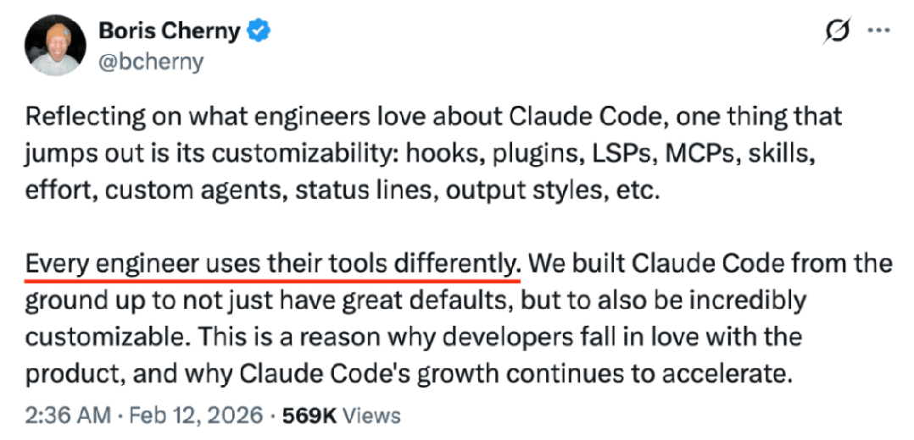
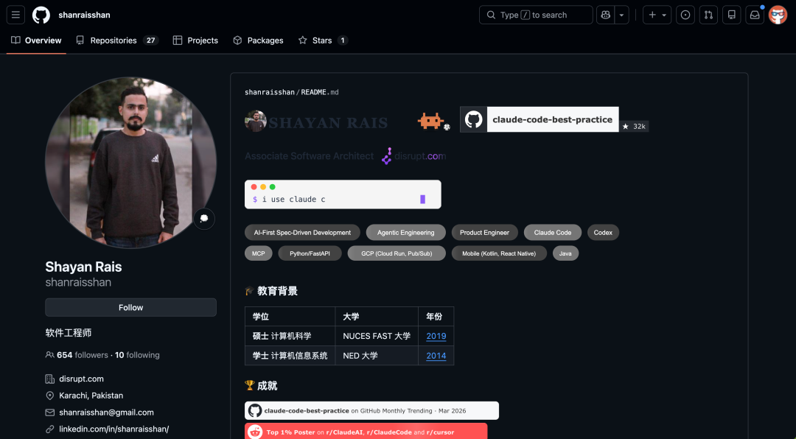
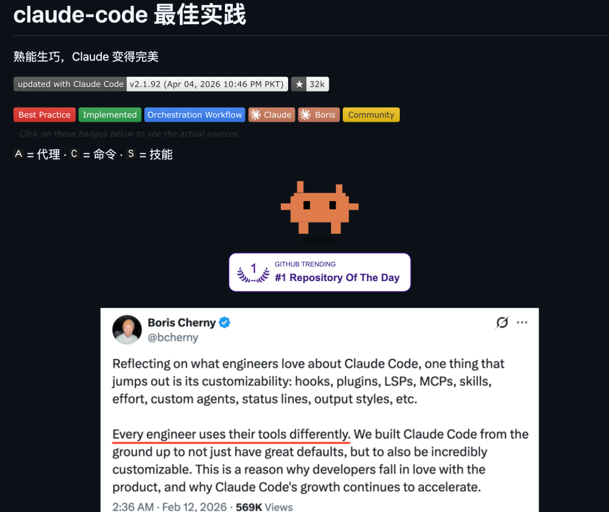
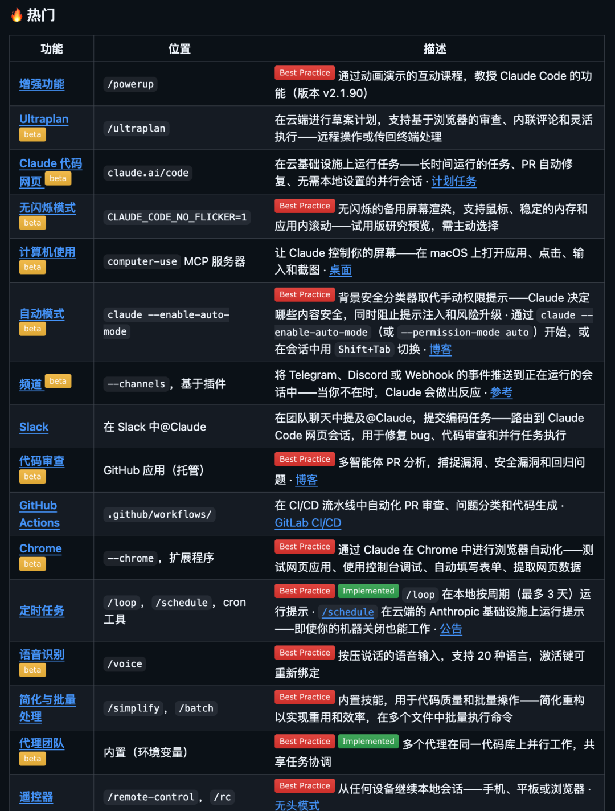
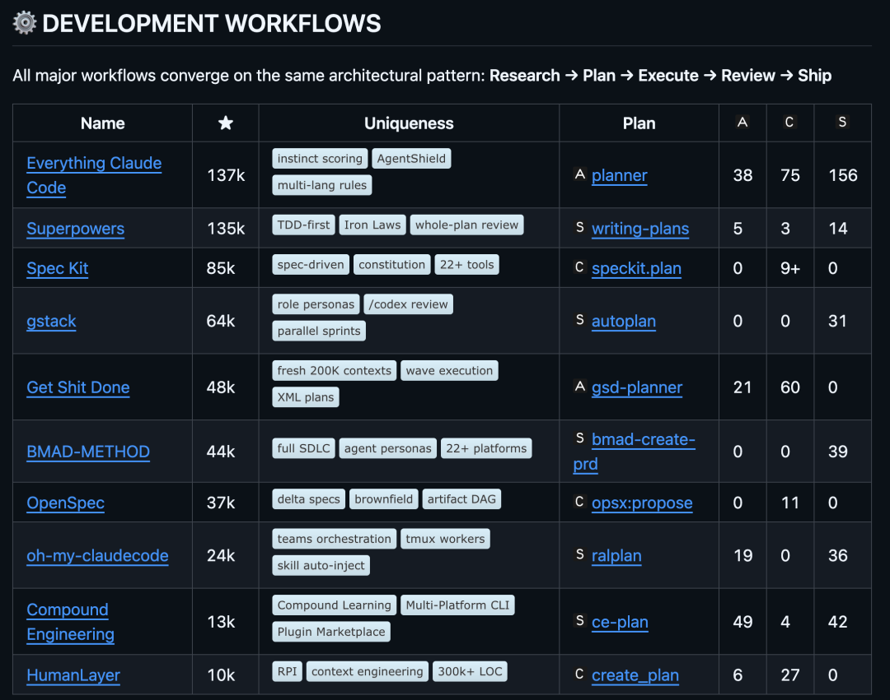
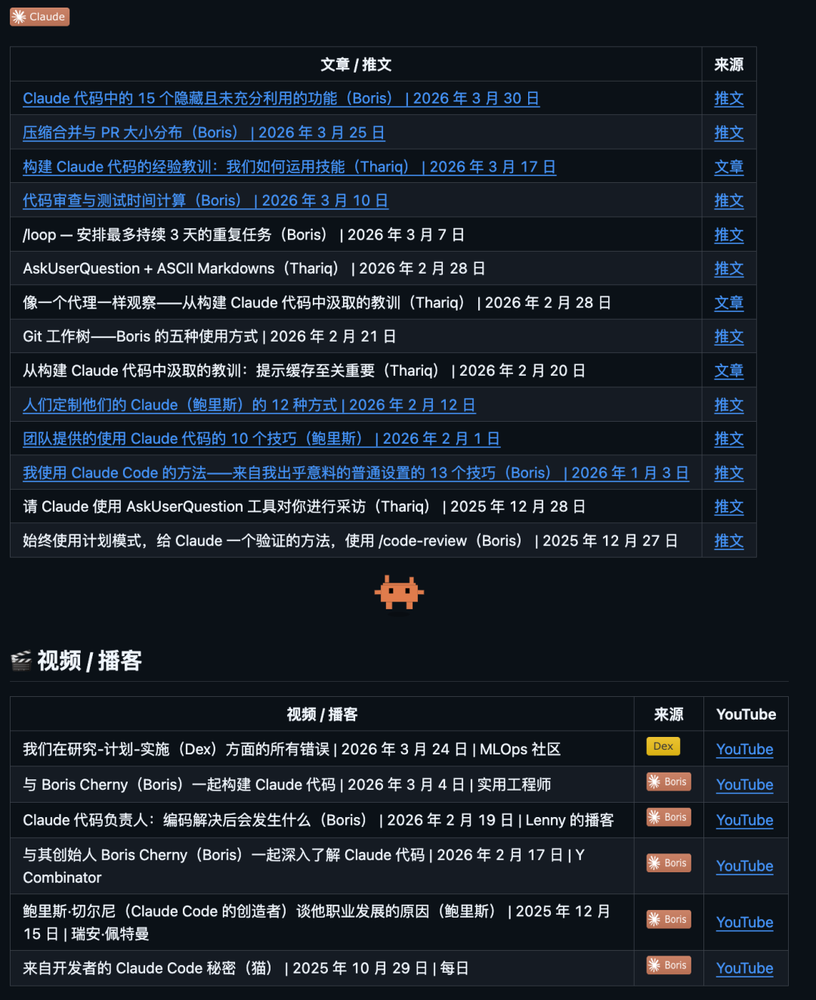
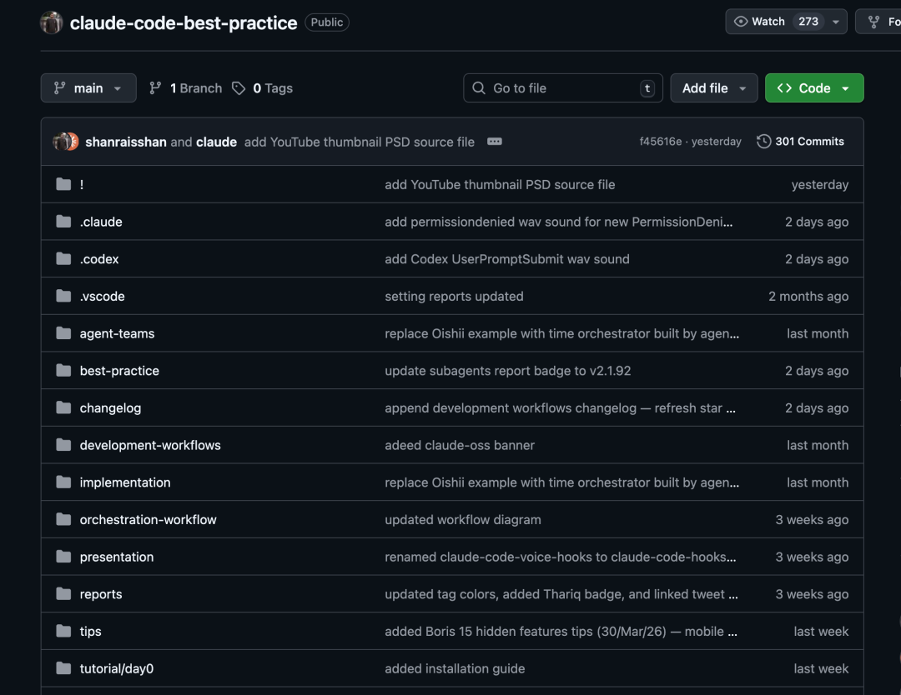

专门整理 Claude Code 的各种使用技巧和工作流，从入门到进阶全覆盖。
还拿过 GitHub Trending 日榜第一，各个社区也有不少讨论。
连 Claude Code 的创造者 Boris Cherny 都在 X 上多次引用这个项目。
项目里还专门收录了 Boris 分享的 15 条使用技巧。

01
项目到底能干嘛
claude-code-best-practice 是一个系统化的 Claude Code 使用指南。
作者是 shanraisshan，如果你经常逛 Reddit 科技区会经常看到他。
这个开源项目的口号是实践造就完美 Claude。

它把 Claude Code 的所有核心能力都拆开讲了一遍。
Agents、Commands、Skills、Hooks、MCP Server、Subagents，每个模块都有可以直接用的模板。
目前收录了 86 条以上的实战技巧。
不是那种翻译官方文档的东西，而是作者和社区真实踩坑后总结出来的经验。

开源地址：https://github.com/shanraisshan/claude-code-best-practice02
核心亮点
看了一圈，我觉得这个仓库最顶的地方有这么几个：
除了体系化的知识架构，项目里有一个 Hot Features 表格，实时追踪 Claude Code 的最新功能动态：

这个全新的全屏渲染器，能够实现点击输入框定位光标位置。
点击折叠的工具结果进行展开/收起完整输出。
而且点击 URL 或文件路径还能直接打开链接或文件
② 10+ 套开发工作流对比
这个仓库不光介绍自己的东西，还横向对比了GitHub 上主流的 Claude Code 开发工作流。

每个工作流都标注了 Star 数、组件数量和 uniqueness 标签，看一眼就知道各自的侧重点：
总的来看，追求质量选 Superpowers，追求效率选 Get Shit Done，想要全家桶选 Everything Claude Code，流程驱动选 Spec Kit。
根据自己的开发风格挑就行。
每个工作流都标注了 Star 数和核心特色，帮你快速选出最适合自己的那一套。
说白了就是一个 Claude Code 工作流的选购指南。
③ 有很多精选的小技巧
有很多热度很高的小技巧、文章和视频教程。
如果你把这个项目里所有内容消耗了，你就是使用 Claude Code 最溜的那批人。

03
怎么用
这个仓库本身就是一个完整的 Claude Code 项目结构。
.claude/ 目录下有现成的 agents、commands、skills 配置文件，你可以直接 Clone 下来，把需要的部分复制到自己的项目里用。
不需要从零开始写配置，拿来就能跑。

第一步，把仓库 Clone 下来：
git clone https://github.com/shanraisshan/claude-code-best-practice.git第二步，像看课程一样浏览。
建议从项目的 README 开始，先搞清楚 Agents、Commands、Skills 这几个核心概念的区别。
项目里还有 tutorial/day0 入门教程，适合刚上手的同学。
第三步，挑你需要的配置。
看看 .claude/ 目录下的模板文件，把适合自己项目的 agents、skills、hooks 复制过去就行。
第四步，选一套开发工作流。
根据项目里的工作流对比表，挑一个和你开发习惯最匹配的，照着配置。
核心思路就是：不用全盘接收，按需取用。
这个仓库的价值不在于教你用 Claude Code 的某个功能，而是帮你建立一套系统化的 Claude Code 使用方法论。
从概念理解到配置模板，从工作流选择到最新功能追踪，基本上你在使用 Claude Code 过程中会遇到的问题，这里都有覆盖。
如果你正在用 Claude Code，或者准备开始用，这个仓库值得收藏。
尤其是觉得 Claude Code 用起来没啥感觉的同学，可能不是工具不行，是打开方式不对。
04
都看到这了，关注下吧。
这个公众号历史发布过很多有趣的开源项目，如果你懒得翻文章一个个找，你直接关注微信公众号：逛逛 GitHub ，后台对话聊天就行了。